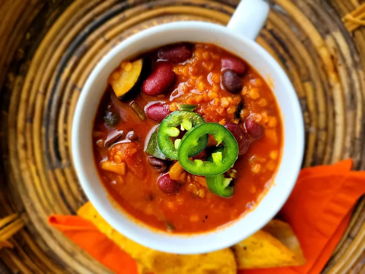

Red Lentil Vegetarian Chili

Description
This is a one-pot recipe for a vegetarian red lentil chili. Packed with tons
of fresh vegetables like carrots, courgettes, onions, and peppers, it also
has a ton of spices and depth to it with smoked paprika, garlic, jalapeños, cumin,
and chili powder. Easily made to feed a whole family, this is great for a mid-week
dinner or a dip for parties and gatherings.
Ingredients
- 2 tablespoons grapeseed oil
- 2 carrots, chopped
- 1 courgette, cut into bite-sized pieces
- 1 onion, chopped
- 1 poblano pepper, chopped
- 3 tablespoons chili powder
- 3 tablespoons cumin
- 1 tablespoon smoked paprika
- 4 cloves garlic, minced
- 1 fresh jalapeño pepper seeded and diced
- 2 tablespoons tomato paste
- 2 (14.5 ounce) cans diced tomatoes with juice
- 2 cups vegetable broth
- 1 (15 ounce) can kidney beans, rinsed and drained
- 1 (15 ounce) can black beans, rinsed and drained
- 1 cup red lentils, rinsed and drained
Steps
-
Heat oil over medium heat in a Dutch oven. Add carrots,
courgette, onion, poblano pepper, 1 tablespoon chili powder,
1 tablespoon cumin, and smoked paprika. Cook until onion is
soft and translucent, 3 to 4 minutes.
-
Remove courgette from Dutch oven and set aside. Add garlic and
jalapeño pepper to the vegetable mixture and stir to combine.
Add tomato paste, 1 tablespoon chili powder, and 1 tablespoon
cumin; stir for 2 to 3 minutes. Add diced tomatoes and vegetable
broth, and bring to a boil. Once liquid boils, stir in kidney
beans, black beans, and red lentils.
-
Reduce heat to medium-low, cover, leaving lid ajar, and simmer
for 15 minutes. Season with remaining chili powder and cumin
to taste.
-
Return courgette to the pot and reduce heat to low. Cover and allow
flavors to blend for about 20 minutes. Taste and adjust seasoning
if needed.
Home